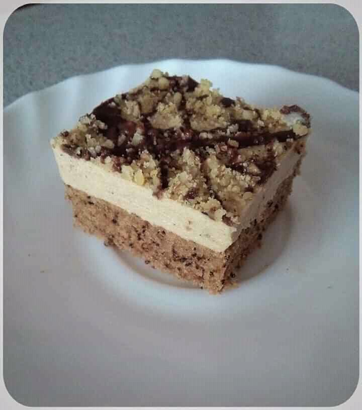

Kávové rezy podľa @marcela.kremserova — Normy Jedál
Kávové řezy
4 ks vejce
120 g cukr krupice
120 g mleté vlašské ořechy
180 g polohrubá mouka
0,50 balíček prášek do pečiva
150 ml teplá káva - i s lógrem
50 ml olej
žloutky vyšleháme s cukrem do pěny, přidáme olej, kávu a dobře promícháme. Přisypeme ořechy, mouku s kypřidlem a opět dobře promícháme. Nakonec vmícháme tuhý sníh z bílků. dáme péct do předehřáté trouby na 180°
Krém
100 g másla
160 g hladké mouky
200 g cukru
1/2 l černé kávy
280 g másla
100 g másla rozpustíme, přidáme mouku a cukr a mícháme až se jíška spojí.
Vlijeme kávu a mícháme do zhoustnutí. Po vychladnutí zašleháme máslo ( 280 g). Natřeme na buchtu, posypeme ořechy a pocákáme čokoládou.
Velikost plechu 30x40 cm
#kavoverezy #kavoverecepty #domacipeceni #pecemeslaskou #pececelazeme #kava #orechy